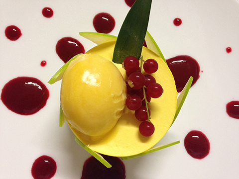
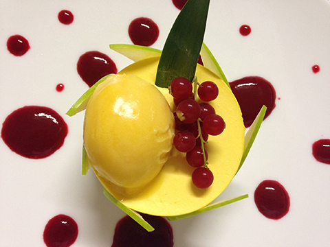

Un restaurant dépaysant, complétement atypique dans une ancienne école de l’entre-deux guerres. Salle de classes, cour de récréation avec préau transformé en jardin luxuriant, où l’on déjeune sous le marronnier ou les platanes mûriers.
Le soir venu l’éclairage met en relief les anciens murs de pierres de cette place idillyque et chargé d’histoire où les artistes viennent exposer. Une cuisine inventive dans l’esprit du site, riche de saveurs et de surprises venue des 4 coins du monde garantissant des légumes frais issu du potager qui jouxte le restaurant. Le restaurant organise régulièrement des cours de cuisine et développe un service de traiteur à domicile.
Plus qu’un bon restaurant, c’est un voyage.
 


Le Restaurant se situe dans la commune des Arques, petit village situé au sud de la France dans le département du Lot région midi pyrénées. A 26 km de Cahors et 26 km de Gourdon.Au sud du périgord et au sud-est de la Dordogne Le village est classé pour l'église Saint Laurent les Fresques de Saint Andrée, l'ancien doyénée et sa tour.
Les Arques sont également connus pour son musée consacré à Ossip Zadkine, les ateliers des Arques qui font venir chaque année une douzaine d'artistes venant de toute l'Europe, et bien sur le restaurant la Récréation. Que d'effervescence dans un si petit village de 217 Habitants.
Le Bourg
46250 Les Arques
Tél : 05 65 22 88 08
Du lundi au dimanche de 12h à 15h15 et de 19h30 à 21h15. Fermé le mercredi et le jeudi.